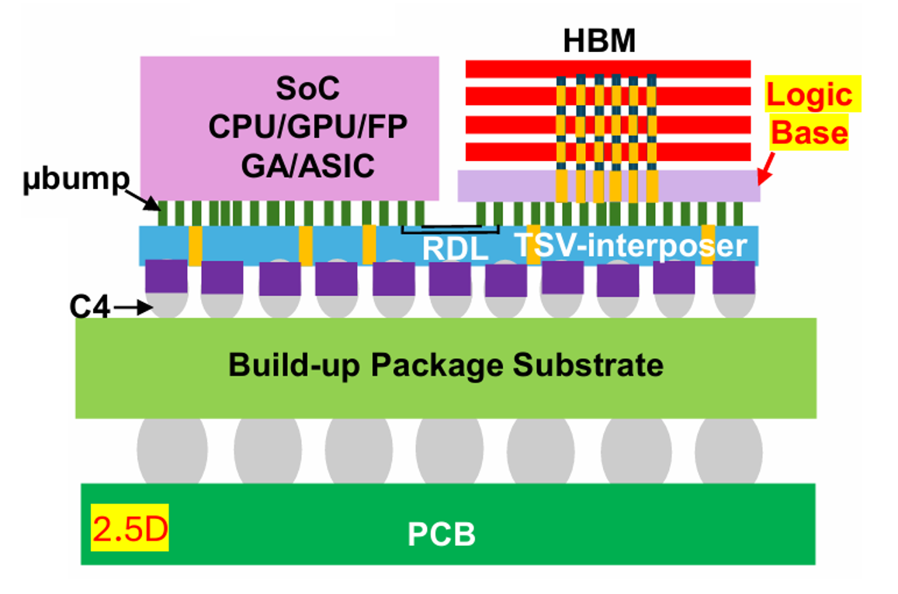
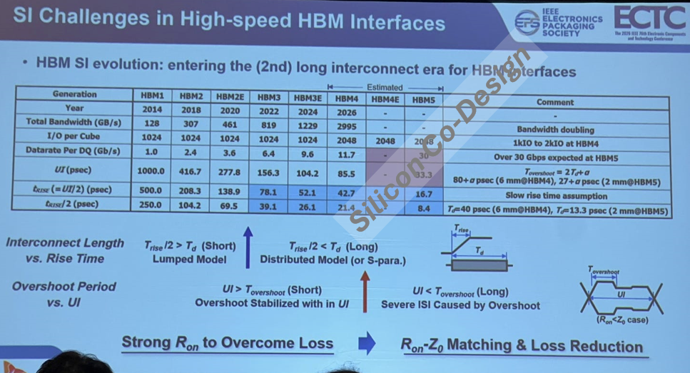
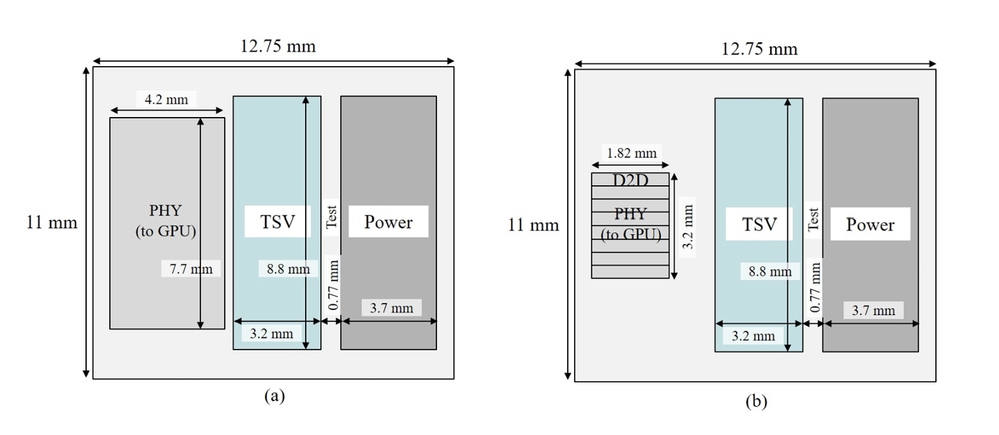
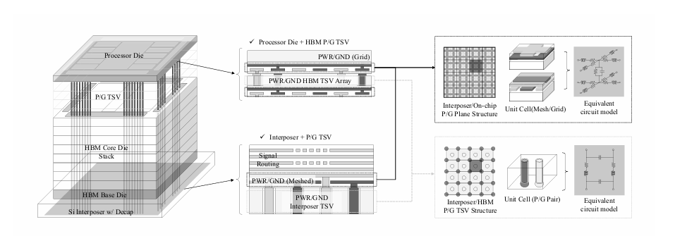
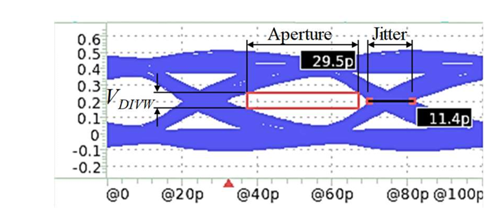
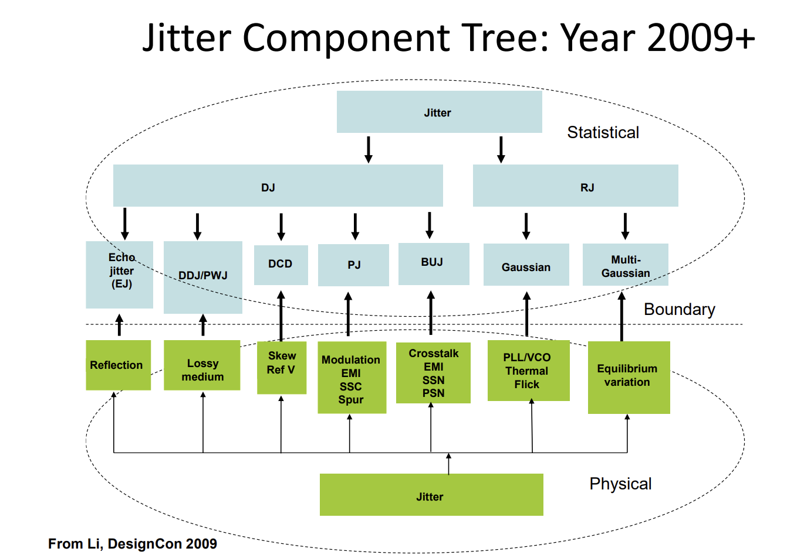
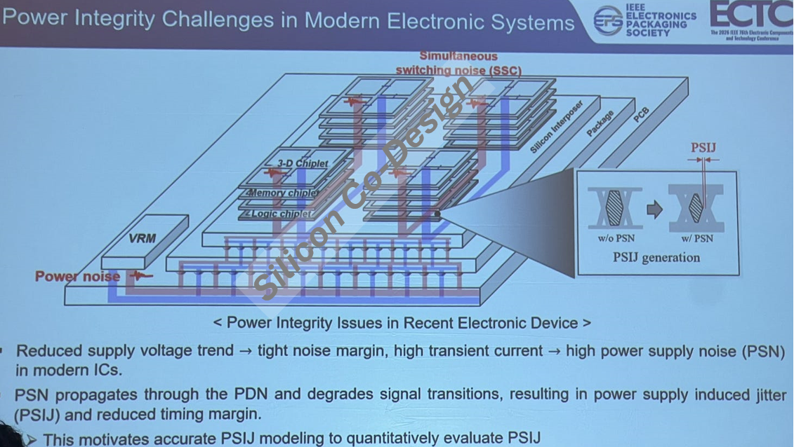
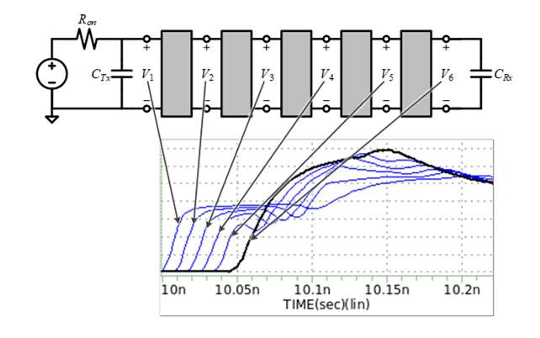
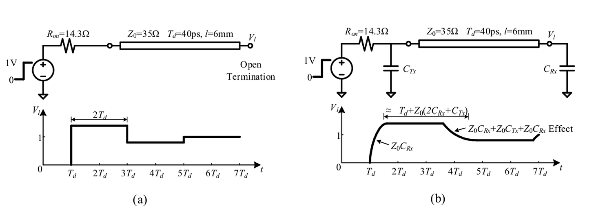
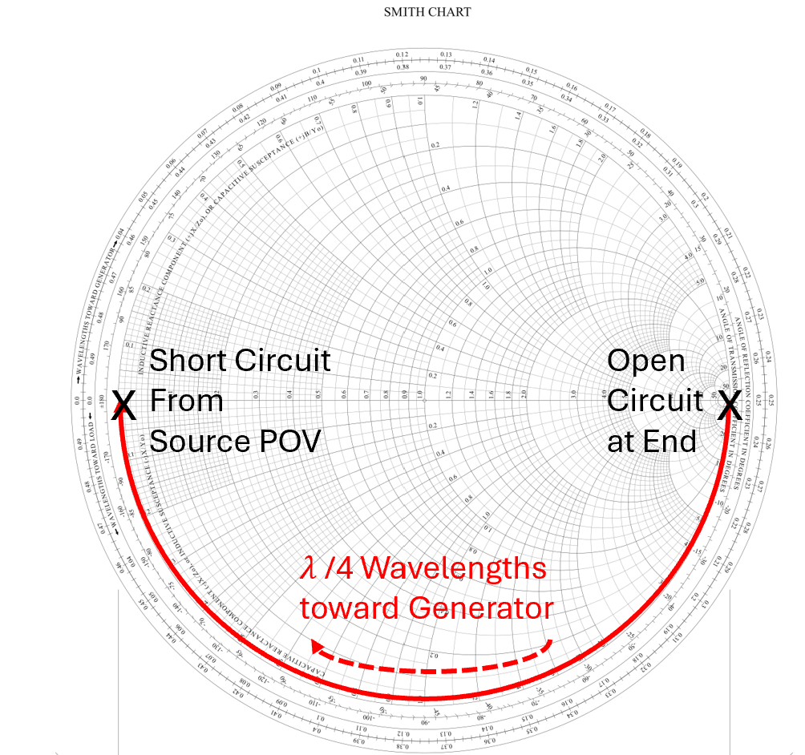

当大量注意力集中在当前的HBM4短缺时，这篇帖子聚焦于扩展HBM5性能的实际技术挑战。
本文将基于SK Hynix和KAIST的ECTC 2026论文，讨论HBM5中以下信号完整性和协同设计挑战：HBM1到HBM5的信号完整性趋势；短高速互连的抖动（jitter）组件树和关键抖动源描述（Echo、SSC/SSN、PSIJ）；SK Hynix如何量化高速HBM5数据线中的传输线效应（传输线基础、RC与LC主导两个工作区域）；以及KAIST面向Chiplet（UCIe）GPU-HBM互连的PSIJ的SI/PI协同分析框架。
这篇文章深受ECTC session 11「Signal Integrity Design for High-Speed Interfaces」影响，也基于我亲临DesignCon 2026的经历。这会是偏进阶的深度解析，但扎根于基础。我以基线EE概念起步，构建理解多层SI/PI协同设计复杂性的框架。
注意我不是信号完整性专家。但我带着RF/Microwave视角沉浸进DesignCon 2026的SI世界，用来分析高速信号完整性效应。读这些论文时很清楚：内存和SI工程师与RF人不说同一种语言，但他们从自己的视角描述同样的效应。
我个人的看法是，在越来越快的数据速率下，RF/Microwave和信号完整性领域之间会有知识收敛。我旨在弥合这个理解鸿沟。
高带宽内存（HBM）是AI训练工作负载的关键组件，存储AI计算涉及的一切：模型权重、梯度、优化器状态和激活。HBM用TSV垂直连接多个DRAM die，在给定footprint内最大化内存密度。这些DRAM die尽可能靠近GPU，以最大化数据吞吐、克服冯诺依曼瓶颈。


在这个ECTC 2026展示的SK Hynix路线图中，有几条HBM世代的性能缩放趋势：
HBM1到HBM4，每DQ数据率从1Gb/s线性增到11.7Gb/s；沿这些世代，信号rise time和unit interval（UI）与每DQ总数据率成反比缩放。
HBM3E到HBM4之间，总带宽阶跃式跳升2.5×，主要由每cube I/O从1024翻倍到2048驱动。
为跟上AI工作负载需求，HBM5期望用Chip-on-Wafer-on-Substrate（CoWoS-L和CoWoS-R）等最先进interposer技术达到每DQ 20-30 Gbps。
在这些数据率下，HBM在信号完整性、电源完整性和热领域遇到协同设计挑战。在ECTC上，我在三篇论文中注意到三个高层次趋势。
SK Hynix指出，对于数据率低于每DQ 10 Gbps、约6mm长interposer互连的先前HBM世代，未观察到显著传输线效应。
然而在30Gbps速率下，先进封装互连技术表现出明显的有损传输线特性，必须加以考虑。
通常传输线用等效阻抗端接以避免反射。然而端接电阻无法合理用于HBM中1000+ 个I/O，因为这会导致高热惩罚和静态功耗。这带来后续将讨论的额外信号完整性挑战。
另一个挑战是I/O的边缘密度限制。I/O引脚数量翻倍导致硅上物理层（PHY）footprint过大。I/O数量从根本上受金属pitch、层数和用于控制串扰的ground rail面积约束。

为扩展I/O数量，KAIST正在研究从宽而慢的I/O走向Universal Chiplet Express（UCIe）标准中更高速SerDes lane的性能影响。
KAIST指出，基于UCIe的chiplet GPU-HBM中利用八个D2D模块，每个模块含64个Tx和Rx、各32Gb/s。共512个Tx和Rx为读和写方向支持2 TB/s。
用更快、更紧凑的PHY，更多I/O能装进HBM shoreline，提高数据吞吐。
另一个协同设计挑战是HBM堆栈中的TSV如何影响热特性。

该论文评估不同TSV配置的热和IR drop特性。这里看到每个组件如何建模为网格结构中的单元阵列，带等效RLC电路模型。
虽然我认为这篇论文对有效协同设计很重要，尤其对建模PSIJ的PDN，但我暂时把分析留在这篇帖子之外，聚焦前两篇论文的信号完整性挑战。
抖动是高速信号完整性的关键约束，必须尽可能考虑和最小化。


高速数据发送到HBM及从HBM发出时，每个bit在称为「Unit Interval」（UI）或bit-period的给定时隙内接收。抖动和slew rate约束把接收数据的有效aperture「窗口」减小。全篇中所有aperture结果都归一化到UI=1。
这个来自Mike Peng Li博士DesignCon 2026 tutorial的全面抖动树展示了许多不同抖动源。
抖动分为两大统计类别：确定性和随机抖动。
在确定性抖动下，有三个与高速、海量并行、非端接线相关的初级抖动类：
由阻抗失配和反射引起的抖动。
当信号沿线传播并遇到阻抗失配时，部分信号前后反射，导致存储的「记忆」和过冲，影响未来bit测量。这会导致ISI。
Bounded Uncorrelated Jitter：有界但与信号不相关的抖动。包括跨海量并行线的串扰，有大量可能的串扰交互组合，但整体抖动影响「有界」在最坏情况。
Periodic Jitter：时序变化在特定频率随时间周期性重复的抖动。包括每个开关周期发生的同步开关噪声（SSN）。
在数据率提高时特别成问题的一个抖动源是power-supply induced jitter（PSIJ）：电路内部一种power-noise引起的时序退化形式。它难以建模，因为它结合了来自几个源的抖动。

电路的rise/fall时间和传播延迟取决于PDN给FET电容充电的速度。门开关时产生同步开关电流（SSC），穿过PDN在线路上引起同步开关噪声（SSN）。PDN上的噪声会影响电容充电电流，引入时序不确定性。
随着在同一PDN上堆叠和塞入更多HBM、PDN线路变得更嘈杂，PSIJ变得更成问题。数据率提高、数千个I/O驱动器同步开关、低电源电压下，PSIJ的边际增加会侵蚀抖动预算并导致信号故障。
现在讨论SK Hynix面临的传输线效应带来的高速SI挑战。我从RF视角宽泛介绍传输效应，作为它关联SI的细微差别，然后直接进入SK Hynix的分析。

从Lumped到Distributed抽象：大多数电路分析（如V = IR）最初以「lumped」抽象教授，其中组件值被lumped或简化成由电阻、电容和电感组成的器件。Lumped抽象构成大多数传统电路分析的基础，如nodal、mesh等。
lumped抽象的重点是，频率足够低时，lumped组件之间物理连接的传播特性可合理忽略。频率低时，由于整条线上分布的电容几乎瞬时充电，信号电平在所有线长上几乎相同。
然而高频下，信号必须物理传播过线从A到B，所以互连的物理特性重要。这被称为「distributed」抽象，其中电磁波传播特性沿线（传输线）起作用。图中可看到高频波发送下线时，电压在不同时间点上升。
决定用lumped还是distributed元素建模的RF经验法则：线长约为信号波长的10% 时，传输线效应开始起作用。对约6mm、er=4的互连，对应2.5 GHz频率。显然HBM数据率正在进入这个区域。
传输线理论中，波沿特性阻抗Zo的线发送时，端接处需要相等阻抗让信号「匹配」，否则波会向后反射。反射系数量化该效应。


阻抗不匹配时反射系数非0。根据失配程度，一部分到达负载的波沿时间延迟Td前后反射，随时间衰减。
对开路或高阻抗电路，Z_L无穷、反射系数为1。这意味着对高频RF信号，所有传播信号都被发回，因为没有地方端接。这表现为图8中的「阶梯」函数。
从源POV，看向线的有效阻抗取决于源和端接之间的线长。Smith chart上的阻抗可按波长的整数倍旋转，找到「看向」线的等效阻抗。一个特例（面试常问）是 λ/4线把开路阻抗「变换」成看向线的短路。
虽然RF有高度发达的宽带分析技术如Smith chart，但应用于信号完整性时有几个注意事项：
数据是数字数据，理想上是带rise/fall时间和奇模谐波的方波，而非宽带正弦波。信号在源端变高时，其值保持高在固定电平直到下一个周期。
互连电阻相当高（1到10多欧姆），相比特性阻抗。在大多数有足够板空间的有损RF传输线中，电阻通常不会这么高。HBM电阻高唯一原因是海量并行所需的微小线宽。
RF理论中特性阻抗常标准化为50欧姆、源阻抗匹配。然而把源阻抗匹配到HBM互连阻抗不实际，因为改变Ron能解决一个问题但制造其他问题：
增大Ron做阻抗匹配会把发射电压砍半、更慢给线充电、降低slew rate；减小Ron需要大宽度晶体管，可能侵蚀边缘密度。
因此SK Hynix为特性阻抗34欧姆选择Ron 14欧姆，平衡版图面积和slew rate的权衡。这导致源端反射系数 -0.41。
简言之，对每DQ 30Gb/s的HBM5，SK Hynix面对高通道电阻和传输线效应的棘手组合，无法用标准微波技术轻松分析，因此必须为高速信号完整性定义自己的评价准则。这些准则涉及把操作模式分为两个不同区域：RC主导和LC主导。
参考：https://www.siliconcodesign.com/p/a-comprehensive-deep-dive-into-high